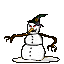

| Übersicht,
Kampf und Magie |
|
Schneeballwerfer??
|
| Jurka (RIP) |
Also irgendwie kann ich mir unter dem Namen Schneeballwerfer nichts vorstellen, was Schaden macht, oder überhaupt eine ernstzunehmende Waffe sein soll.
Daher wollt ich mal die kreativen Geister hier befragen, was es denn sein könnte... lasst ma eure Phantasie spielen...
Also ich würd sagen, das is ne Steinschloßpistole...
Hab nämlich schon oft Seefahreravatare hier gesehen, die ne Muskete oder ne Pistole hatten.
7er Angriffswert, weil: maximal 6-8 Schuss pro Stunde und bei Regen absolut nich zu gebrauchen? :)
|
08.05.05 1:31

|
|
| Celebrimbor (RIP) |
Steinschleuder. |
08.05.05 1:36
|
|
| Mayandra la Vega (RIP) |
Also ich stell mir das wie so ein kleines Katapult vor, dass der Seefahrer wie eine Tigerente hinter sich herzieht.
Feuert halt statt Steinen mit Schneebällen ;) |
08.05.05 2:17
|
|
| Nemo van Delving (RIP) |
Naja, ich weiß auch nicht wie man auf so ne Idee kommt. Ich glaub wenn ich einen Ork oder sogar Dämonen mit Schneebällen bewerfe lacht der doch nur drüber :)
Ich bin ja immer noch dafür die Harpune in eine 7er FK Waffe umzuwandeln, das würde schon eher zum Seemann passen. |
08.05.05 4:02
|
|
| Aarés Donas (RIP) |
Vieleicht sinds ja eigentlich Eisbälle ;) |
08.05.05 7:28
|
|
| Bibi Biberzahn (RIP) |
Und was ist, wenn es ein Feuerdämon ist? Da macht ein Schneeball schon aua.
Und du zielst natürlich auch nicht auf den Ork, sondern auf die Fackel, die er trägt.
Wenn die erstmal aus ist, stolpert er im Dunkeln und rammt sich sein eigenes Schwert in den Bauch.
Ausserdem glaube ich, du hast noch nie einen Schneeball zwischen deine beiden großen Zehen abbekommen.... |
08.05.05 9:18
|
|
| Celebrimbor (RIP) |
Wenn der Schneeball groß genug ist muss man ihn nicht mal zwischen die beiden großen Zehen abbekommen... |
08.05.05 12:56
|
|
| Elder von Adlerfeste (RIP) |
Ich schätze das teil schiest nen ganz normalen Schneeball ab und ankommen tut beim gegner sowas:

und das macht dann aua. :) |
08.05.05 13:19
|
|
| Davatar (RIP) |
wenn die Geschwindigkeit entsprechend hoch ist kann auch das kleinste Geschoss zur tödlichsten Waffe werden.
denke aber auch dass es sich eher um Eisbälle oder Schneematschbälle (auch Pflotsch genannt ^^) handelt. |
09.05.05 12:43
|
|
| Nemo van Delving (RIP) |
Aber wo kriegt ein Seemann Schnee her im Sommer? Dann müsste der Schneeballwerfer eine magische Waffe sein :) |
09.05.05 16:17
|
|
| Shadhan (RIP) |
Hey, ne Waffe die zu 90% aus Schnee und zu 10% aus Holz besteht muss doch magisch sein... oder wie stellst dir das vor :) |
09.05.05 21:52
|
|
| Nemo van Delving (RIP) |
Das muss eine echt krasse Waffe sein *g*
|
10.05.05 7:20
|
|
| Rhenaya (RIP) |
Wie stellst du dir das vor, stellst ein paar schneemänner ins lager und schon isses kühl genüg das nich alles verfault ... ja sogar metal kann verfaulen ohne kühlung bei grossen mengen *g*
und wenn sich wer über magische waffen aufregt: wehe der hat auch nur einen magier in der gruppe *fg* |
10.05.05 9:32
|
|
| Nepomuk (RIP) |
oder durch die Schockgefrierung wird das Ziel an der getroffenen Stelle seeeehr spröde und zerspringt....
und wenn man so viel Schnee für die Waffe braucht, ists dann einfach eine Art Kühlschrank in der normales Wasser zu Eisbällen gefroren wird... |
18.05.05 13:46
|
|
| Wasil (RIP) |
Also das hier ist mein kleiner Schneeballwerfer:

Schlepp den schon eine ganze Weile mit mir herum, und hoffe, dass der eines Tages groß ist und mit etwas mehr Schlagkraft agieren kann.
Bei meinem alten hab ich vergeblich auf Verbesserungen gewartet, und musste ihn zwischenzeitlich ausser Dienst stellen. Immerhin meldete er sich später, er habe einen neuen Job gefunden, und lebe glücklich und zufrieden.
 |
22.05.05 11:05
|
|
| Mia von Tacheless (RIP) |
und ich dachte immer der schneeballwerfer modell wespe sieht so aus:
 22.05.05 14:03 22.05.05 14:03
|
|
| Mia von Tacheless (RIP) |
 |
22.05.05 14:04
|
|
| Mia von Tacheless (RIP) |
ah, geht doch *g* |
22.05.05 14:04
|
|
Übersicht,
Kampf und Magie
|